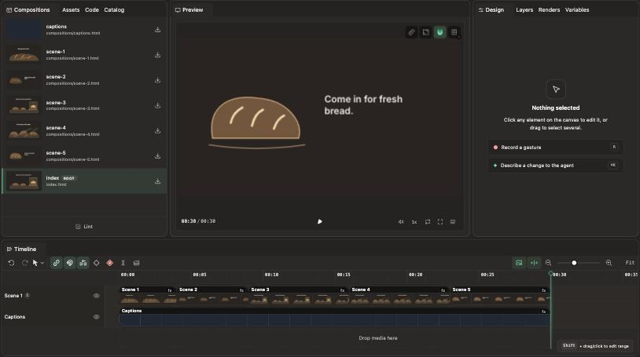
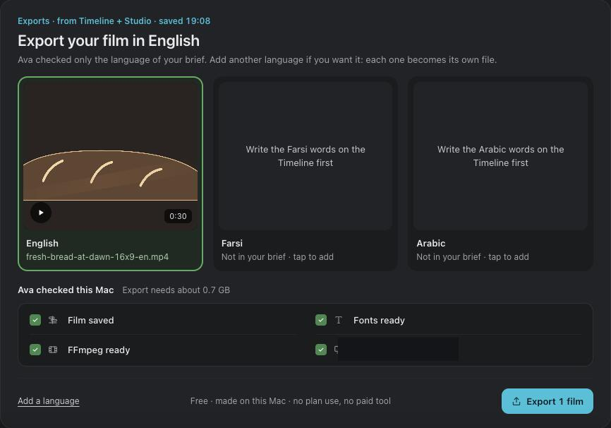
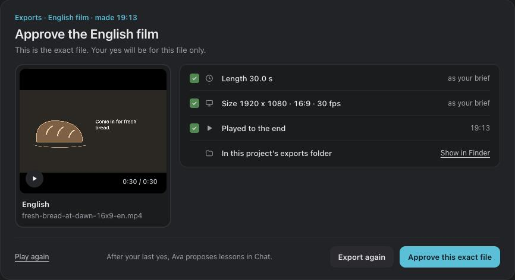
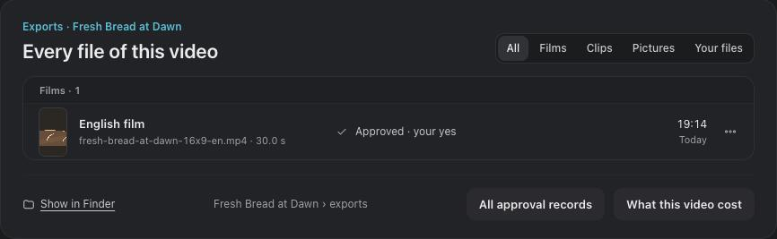
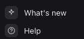

Finish and share
Check the film. Export it. Approve the exact file.
At the end: You have an approved video file you can find and share.
Open the same video from Session 2 in Projects.
The steps add to 60 minutes. Pause when you need to. Making files can take longer.
Review the film in Timeline
10 minPlay the whole film. Check its words, pictures and timing.
Ask for a change in chat if needed. Wait for it to save. Play the changed part again.


Export your film
10 minChoose Export. Check the size and language you want.
Read the Mac checks. Choose Export 1 film when they are ready.
Ava Stage makes the file on this Mac. Export uses no paid tool.


Play and approve the exact file
15 minOpen the finished file. Play it to the end.
Check the whole frame, words, length and sound. Choose Approve this exact file only when it is right.
Each language and size needs its own check and approval.


Find the file to share
10 minOpen Exports to see the files of this video.
Use Show in Finder to find the approved file. Share that file from Finder.


Check the saved approval
10 minCheck that the file row says Approved · your yes. Open All approval records to see the records.
You can reopen the project from Projects. Check the saved file before you share it.

Check What’s new
5 minOpen What’s new at the bottom of the side menu. Read the changes before you update.
After an update, macOS may block the new version. Stop if it says damaged or harmful.
Otherwise, use System Settings → Privacy & Security → Open Anyway.
Use Touch ID or your Mac password. Choose Open again. You do this once for each new version.

